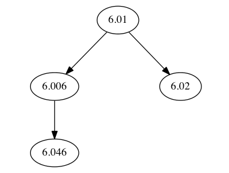
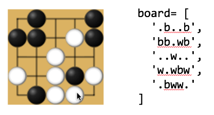
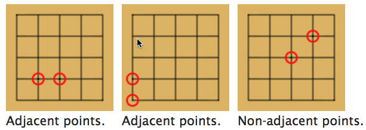
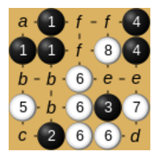
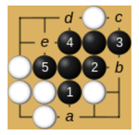
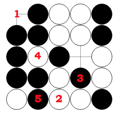

Fundamentals of Programming
(Fall 2018)
If you are a current student, please Log In for full access to the web site.
Note that this link will take you to an external site (https://oidc.mit.edu) to authenticate, and then you will be redirected back to this page.
Practice Problems for 6.009 Quiz 3 (Fall 2018)
Since these are practice problems, there is nothing to turn in! We have included unit tests for each problem: the unit test for Problem 01 is called TestProblem01, and so on.
The following file contains quiz.py and test.py: q3_problems.zip
Problem 01: count_viable
Ilia is on tour running an animal circus. He has trained a number of
different animals, each with a particular weight. Unfortunately, he is
limited by the weight capacity of his trailer. A set of animals S
is viable if the total weight of the animals in S is at most the
trailer's weight capacity.
Your task is to count the number of viable sets of animals, given the weights of the animals and the weight capacity of the trailer. We recommend that you perform a search over possible sets of animals.
For this question you will implement the count_viable() function to the
specification below.
INPUTS:
-
weights: a list of positive weights, whereweights[i]is the weight of theith animal. -
capacity: the weight capacity of Ilia's trailer, guaranteed to be positive.
OUTPUT:
The number of viable sets of animals. Recall that the different orderings of the same elements are not different sets. Don't forget the empty set (no animals)!
EXAMPLES:
-
count_viable([2, 3, 4], 1)should return1(only the empty set is viable). -
count_viable([1, 2], 3)should return4.
Problem 02: course requirements
You are given a set of classes and their prerequisites. Your task is to find an order in which to take all of the classes so that the prerequisite requirements are satisfied. Two classes cannot be taken simultaneously.
One way to represent the classes and their prerequisites is a directed graph. We can represent each class as a node and the prerequisite requirements as directed edges. If A is a prerequisite for B, then we draw a directed edge from A to B.
For example, consider the following list of classes and their prerequisites:
- 6.01, Prereqs: None
- 6.006, Prereqs: 6.01
- 6.02, Prereqs: 6.01
- 6.046, Prereqs: 6.006
We can represent the relationships in the following directed graph:

We represent the directed graph as a dictionary class_graph, in
which class_graph[node] is a list of node's children. For the
graph above, class_graph is the following.
{
"6.01": ["6.006", "6.02"],
"6.006": ["6.046"],
"6.02": [],
"6.046": []
}
To solve the original problem, we must now find an order in which to visit all of the nodes so that each node is visited after its parents. Note that the solution is not unique -- we only need to identify one. We outline an algorithm below. This problem is known as topological sorting.
We want to build a list clist of courses that obeys the prerequisite
constraints; initially clist is empty. Here's a simple recursive
recipe take(c) that will add a c to clist, making sure all of
c's pre-reqs are taken first:
- if
cis onclist, we're done! - otherwise recursively
takeall ofc's prerequisities. You may wish to create a new data structure that makes it easy to determine a course's preprequisites. - then append
cto the end ofclist
Now just take all the courses and clist will be the list we're
looking for.
For this problem you will implement the find_valid_ordering() function
to the specification below.
INPUTS:
class_graph: a directed graph, as a dictionary, that represents a set of classes and their prerequisites.
OUTPUT:
A list of all classes, in order, to take so that the prerequisites are satisfied.
EXAMPLE:
In the example above, one possible solution to
find_valid_ordering(class_graph) is ["6.01", "6.006", "6.02",
"6.046"].
Problem 03: a database of classes
This question consists of 2 parts.
You are given a database of scheduling information about a set of classes over a semester. We make the following assumptions about the schedule:
- A class meets at most once on any given day.
- Meetings last exactly 1 hour.
- Meetings can only begin on the hour at 09:00, 10:00, ..., 16:00.
- The semester consists of 15 weeks: Week
"1", Week"2", ..., Week"15".
Each day in the semester is represented as a 2-element list: [WEEK,
DAY_OF_WEEK]. For example, the fifth Friday of the semester is
denoted as ["5", "Friday"]. Note that both elements in the list
are strings.
The database consists of two parts, the default_db database and
the update_db database. default_db contains the original
schedule that is now outdated. default_db is a list of weekly
entries. Each entry is itself a list of strings: a class name, a
time of day, and a day of the week. The time is the hour at which
the meeting starts, according to a 24-hour clock. These meetings
were originally scheduled to occur every week.
The following is a small example default_db that contains three weekly entries.
[
["6.009", "15", "Monday"],
["6.009", "14", "Friday"],
["6.01", "10", "Tuesday"],
]
Next, the update_db database contains updates to the original
schedule. There are two types of updates: ADDs and DELETEs. We
represent update_db as a list of updates. Each update is itself a
list of strings: an update type, a class name, a time, a day of the
week, and a week number. Unlike the weekly entries in default_db,
each update in update_db only gives information for a specific
day. Each ADD update refers to a meeting that does not already exist
in default_db. Each DELETE update refers to a meeting that exists in
default_db.
Extending the example above, the following is an update_db that
contains two updates.
[
["ADD", "6.009", "12", "Thursday", "15"],
["DELETE", "6.009", "15", "Monday", "15"]
]
After updating the original schedule in default_db with update_db,
we see that our schedule should consist of the following meetings:
"6.009"meets at"15"on"Monday"s on every week except Week"15"."6.009"meets at"12"on"Thursday"in Week"15"."6.009"meets at"14"on"Friday"every week."6.01"meets at"10"on"Tuesday"every week.
In the following parts, you will implement functions to retrieve
information about the schedule. They require an implementation of the
build_rep() function. build_rep() processes instances of the two
databases and returns a new representation of the information. The
output of build_rep() is passed into the other functions. Building
effective representations should be very helpful. You should modify
the default representation. Consider using objects to encapsulate
the database contents.
The default_db and update_db databases will be provided as
arguments to build_rep(), but not the other functions. For your
convenience, you can look through raw text versions of the databases
in the resources/database/ folder. It might be useful to search
these files when debugging. We do not recommend printing the entire
databases at once, since they are quite large.
Part A
For Part A you will implement the get_class_days() function
to the specification below.
INPUTS:
class_list, a list of classes as stringsrep, the representation ofdefault_dbandupdate_dbproduced bybuild_rep()
OUTPUT:
A list of lists class_days where class_days[i] is a list, in no
particular order, of all days on which class_list[i] meets. If
class_list[i] never meets, then class_days[i] should be an empty
list []. The days should be represented as 2-element lists of the
form [WEEK, DAY_OF_WEEK].
EXAMPLES:
Using the above example,
-
get_class_dates(["6.009"], rep)could return[[["1", "Monday"], ["2", "Monday"], ..., ["14", "Monday"], ["15", "Thursday"], ["1", Friday], ["2", "Friday"], ..., ["15", "Friday"]]]. -
get_class_dates(["18.01", "6.01"], rep)could return[[], [["1", "Tuesday"], ["2", "Tuesday"], ..., ["15", "Tuesday"]]].
Part B
For Part B you will implement the get_late_classes()
function to the specification below.
INPUTS:
time, a time of day as a string. Only whole number strings"9","10", ... ,"16"are allowed.rep, the representation ofdefault_dbandupdate_dbproduced bybuild_rep().
OUTPUT:
A list, in no particular order, of all classes that never meet before
time during the semester.
EXAMPLES:
Using the above example,
get_late_classes("10", rep)could return["6.009", "6.01"].get_late_classes("12", rep)should return["6.009"].get_late_classes("14", rep)should return[].
Problem 04: Registrar for a day
Mary Callahan, the MIT Registrar, has asked for your help in creating a
new abstract data type (i.e., a Python class) to track student
enrollment during the term. Here are her specifications.
The TermRecords class
Please implement a "new-style" Python class called TermRecords, which supports the following methods. You should look over the method specifications to determine the best internal data structures to use.
__init__( self, records )
{ "student": student,
"subjects": [subject, subject, ...]
}
where student is a string uniquely identifying the student and subject is a string uniquely identifying a subject.
transcript( self, student ) # subtests 1-3
None if the student doesn't exist.
classlist( self, subject ) # subtests 4-6
None
if the subject doesn't exist.
Basic operations
add( self, student, subject ) # subtests 7-9
drop( self, student, subject ) # subtests 10-12
Registration queries
too_many_subjects( self, limit ) # subtests 13-14
enrollments( self ) # subtest 15
taking_all( self, subject_list ) # subtests 16-18
subject_list.
taking_some( self, subject_list ) # subtest 19
subject_list.
Challenge problem! (save until everything else is done!)
better_together( self, N ) # subtests 20-22
Problem 05: Ready, Set, ...
Go is a stone-placing game played on a square grid. Players take turns placing stones of their colors (white or black) at empty intersections. The exact rules of placement aren't important for this problem. The figure below shows a small board after some number of moves, along with its Python representation as an array of strings.

Note that since strings support indexing, you can address the board
just like a 2D array represented as a list-of-lists. For example,
board[1][2] yields '.'. [0][0] is the coordinate of the top-left
intersection.
Two intersections are said to be adjacent if they are distinct and connected by a horizontal or vertical line with no intersections between them, like so:

Two placed stones of the same color (or two empty intersections) are said to be connected if it is possible to draw a path from one position to the other by passing through adjacent positions of the same state (empty, occupied by white, or occupied by black). For example, in the diagram below, stones and empty points are marked with the same number or letter, respectively, whenever they are connected to each other.

A liberty of a stone is an empty intersection adjacent to that stone or adjacent to a stone which is connected to that stone. For example, in the diagram below, the points a, b, c, d, and e are the liberties of the black stone at 1.

In fact, since they are connected, all the black stones have the same liberties: a, b, c, d, and e.
Part 1: has_liberty [tests 01-05]
Please implement the function has_liberty(board,row,col) where
board is a list of strings representing a square Go board. Your
function should return True if the stone at board[row][col] has at
least one liberty or if the specified intersection has no stone,
False otherwise. You may assume row and col are legal
coordinates.
The examples below are based on the following board (numbers show which intersection is specified by each numbered example).

-
has_liberty(board,0,0)should returnTrue. -
has_liberty(graph,4,2)should returnFalse. -
has_liberty(graph,3,3)should returnTrue. -
has_liberty(graph,2,1)should returnFalse. -
has_liberty(graph,4,1)should returnTrue.
Part 2: capture [test 06-07]
A stone is captured if it has no liberties. After a move, the board is scanned to find all the opponent's stones that have been captured (i.e., that have no liberties), then those stones are removed from the board. Note the two phases -- first find all captured stones, then remove them.
Please implement the function capture(board,color) that returns an
updated board with all the captured stones of the specified color
removed. color will be either 'w' or 'b'. Represent the
updated board as a list of strings, using the convention described
above.
Examples (using the example board above):
capture(board,'w') removes the 5 captured white stones and returns
['.bwwb',
'bbwwb',
'b.b.w',
'bb.bw',
'.b..b']
capture(board,'b') removes the 3 captured black stones and returns
['.bww.',
'bbww.',
'bwb.w',
'bbwbw',
'wbww.']
Problem 06: k-Label Poker
In a deck of normal playing cards, each card has two labels, a rank
(1,2,...,K) and a suit (diamonds, spades, clubs, hearts), so
(K,spades) and (4,diamonds) are both possible cards. In our version of
poker, each card has k different labels, where each label is a
positive integer 1,...,L. Therefore, if k = 4 and L = 5, then
(1,1,1,2) and (2,1,5,1) are both valid cards.
k-label poker is played with hands of size n. Repeat cards within a hand are
not allowed. In our version of poker, a straight happens if all of the
labels in the hand form a nondecreasing sequence. For example, if k =
2, L = 5, and n = 3, then the hand [(1,1), (1,2), (3,5)] would
be a valid straight since the sequence 1,1,1,2,3,5 is nondecreasing
but [(3,5), (3,1), (2,2)] would not. Note that [(1,2), (1,1),
(3,5)] is a different hand (and is not a straight) from [(1,1),
(1,2), (3,5)] (which is a straight).
Note that this problem has a very special definition of a straight that is different from the usual poker straight (if you happen to play poker). This specialness includes two unusual aspects: first, the labels for any given card in the hand must be non-descending; and second, the labels aggregated (in order) across all (ordered) cards in the hand must also be non-descending.
Please implement count_straights(k, L, n), where k is the number
of labels for a given card, L is the maximum integer label for any
card, and n is the length of hand. Your function should return the
number of possible straights in hands of size n where each card has
k labels of maximum value L. Cards cannot be repeated in a
straight.
Performance hint: You will pass most of the tests with a brute-force search that generates all the hands and counts the number of straights, but may time out on some tests. It is not necessary to generate all possible hands to count straights, but if you find that difficult to reason about or code, try the brute-force method.
Example 1: count_straights(2, 3, 4)
The possible cards are (1,1), (1,2), (1,3), ..., (3, 3).
We are considering hands of length 4. In this case, 5 straights are possible:
[(1,1), (1,2), (2,2), (2,3)]
[(1,1), (1,2), (2,2), (3,3)]
[(1,1), (1,2), (2,3), (3,3)]
[(1,1), (2,2), (2,3), (3,3)]
[(1,2), (2,2), (2,3), (3,3)]
Example 2: count_straights(3, 5, 2)
The possible cards are (1,1,1), (1,1,2), (1,1,3), ..., (5,5,5).
We are considering hands of length 2. In this case, 205 straights are possible:
[(1,1,1), (1,1,2)]
[(1,1,1), (1,1,3)]
...
[(1,2,3), (4,4,5)]
[(1,2,3), (4,5,5)]
...
[(4,5,5), (5,5,5)]
Problem 07: Database Search Redux
This question consists of three parts. You are given a database of scheduling information about a set of classes over a semester. We make the following assumptions about the schedule:
-
A class meets at most once on any given day.
-
Meetings last exactly 1 hour.
-
Meetings can only begin on the hour at 09:00, 10:00, ..., 16:00.
-
The semester consists of 15 weeks: Week
"1"', Week"2", ..., Week"15". -
All meetings occur in one of the following buildings:
"Walker","Stata","W20","Koch","Kresge","W66","W36","E17","E51".
Each day in the semester is identified by its WEEK_NUMBER and its
DAY_OF_WEEK, e.g. the 5th Friday.
The database consists of two parts, the default_db database and
the update_db database. default_db contains the original schedule
that is now outdated. default_db is a list of weekly
entries. Each entry is itself a list of strings: a class name, a time
of day, a day of the week, and a building location. The time is the
hour at which the meeting starts, according to a 24-hour clock. These
meetings were originally scheduled to occur every week.
The following is a small example default_db that contains three weekly entries.
[
["6.009", "15", "Monday", "W36"],
["6.009", "14", "Friday", "Koch"],
["6.01", "10", "Tuesday", "Stata"],
]
Next, the update_db database contains updates to the original
schedule. There are two types of updates: ADDs and DELETEs. We
represent update_db as a list of updates. Each update is itself a
list of strings: an update type, a class name, a time, a day of the
week, a building location, and a week number. Unlike the weekly
entries in default_db, each update in update_db only gives
information for a specific day. Each ADD update refers to a meeting
that does not already exist in default_db. Each DELETE update refers
to a meeting that exists in default_db.
Extending the example above, the following is an update_db that
contains two updates.
[
["ADD", "6.009", "12", "Thursday", "Walker", "15"],
["DELETE", "6.009", "15", "Monday", "W36", "15"]
]
After updating the original schedule in default_db with update_db,
we see that our schedule should consist of the following meetings:
"6.009"meets at"15"on"Monday"s in"W36"on every week except Week"15"."6.009"meets at"12"on"Thursday"in"Walker"during Week"15"."6.009"meets at"14"on"Friday"in"Koch"every week."6.01"meets at"10"on"Tuesday"in"Stata"every week.
In the following parts, you will implement functions to retrieve
information about the schedule. They require an implementation of the
build_schedule_rep() function. build_schedule_rep() processes the two databases and
returns new representations of the information. The output of
build_schedule_rep() is passed into the other functions. You can choose
whatever representation you think will work best for the functions of
Parts A, B and C.
The default_db and update_db databases will be provided as
arguments to build_schedule_rep(), but not the other functions. For your
convenience, you can look through raw text versions of the databases
in the test_data/p7/ folder. It might be useful to search these files
when debugging. We do not recommend printing the entire databases at
once, since they are quite large.
Part A: Tests (01-03)
For Part A you will implement the get_near_classes() function to the
specification below.
INPUTS:
buildings, a list of buildings as stringsrep, the representation ofdefault_dbandupdate_dbproduced bybuild_schedule_rep()
OUTPUT:
A list, in no particular order, of all classes that meet only in
the list of buildings given by buildings.
EXAMPLES:
Using the above example,
get_near_classes(["Walker"], rep)should return[].get_near_classes(["Walker", "W36", "Stata"], rep)should return["6.01"].get_near_classes(["Walker", "W36", "Koch", "Stata"], rep)could return["6.009", "6.01"]or the same set of classes in a different order.
Part B: Tests (04-08)
For Part B you will implement the earliest_meeting() function which
retrieves the time of the earliest meeting in a given building on a
given day of the week across all weeks.
INPUTS:
building, a string such as"Stata".day_of_week, a string such as"Friday".rep, the representation ofdefault_dbandupdate_dbproduced bybuild_schedule_rep()
OUTPUT:
An integer earliest time (hour, such as 9), the earliest meeting
given by the combined database of classes, occurring on any week
in building on day_of_week. If no meetings take place on
day_of_week in that building on any week, return None.
EXAMPLE:
Using the tiny database in the example above,
earliest_meeting("Stata", "Tuesday", default_db, update_db) should
return 10, while earliest_meeting("Stata", "Monday", default_db,
update_db) should return None.
Part C: Tests (09-12)
For Part C you will implement the have_conflicts() function to the
specification below.
INPUTS:
class_list, a list of classes as stringsrep, the representation ofdefault_dbandupdate_dbproduced bybuild_schedule_rep()
OUTPUT:
A Boolean (True/False) indicating whether any two classes in
class_list conflict. Two classes conflict when they meet on the same
day of the week during the same week at the same time.
EXAMPLE:
Using the above example, have_conflicts(["6.009", "6.01"], rep) should return False.